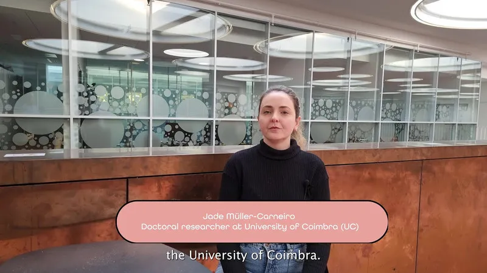

O novo episódio do FuSu – Futuro Sustentável traz uma reflexão profunda sobre como medir e reduzir o impacto ambiental das nossas ações. Em conversa com Jade Muller, especialista em sustentabilidade e Avaliação do Ciclo de Vida (ACV), exploramos as bases dessa metodologia científica que permite compreender o verdadeiro custo ambiental de tudo o que produzimos e consumimos.
Ao longo do episódio, Jade explica como a ACV pode orientar empresas, governos e cidadãos a tomarem decisões mais responsáveis — desde o design de produtos até o descarte final — e como essa visão integrada ajuda a construir uma economia mais circular e sustentável.
A Avaliação do Ciclo de Vida é mais do que uma ferramenta técnica: é uma forma de repensar nosso papel no planeta e os impactos invisíveis das nossas escolhas.
👉 Ouça já o episódio completo no seu agregador de podcast favorito!